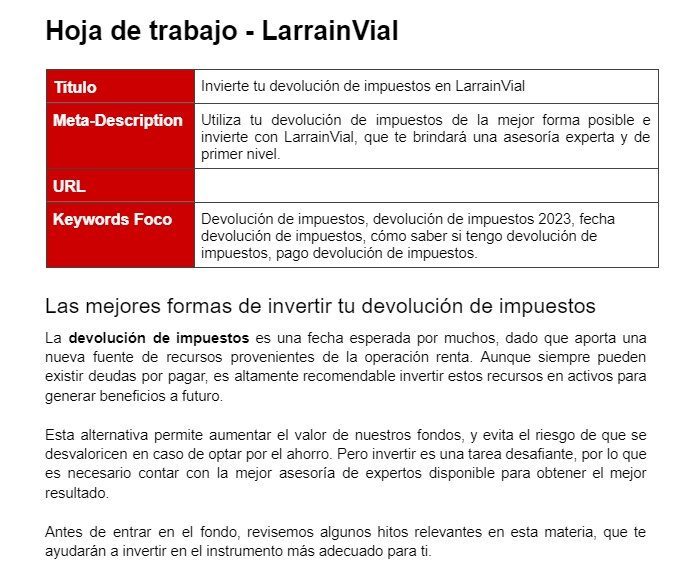

Estudios
Universidad
Estudió en la PUCV, entre el año 2015 a 2020, obteniendo el grado de Licenciado en Comunicación Social y de Periodista.
Inglés
Cuenta con un certificado Cambridge English Entry Level Certificate in ESOL International (PET- Level B1) Junto a otro certificado Upper Advanced CEFR Level C2 de English Live.Certificados
Cuenta con diez (10) certificaciones en marketing digital, entre las que se cuentan: Curso de Estrategia y Planeación de Contenidos para SEO; Curso Análisis competitivo e investigación de palabras clave; Curso de Fundamentos SEO; Curso de Optimización de SEO Técnico; Curso de Prompt Engineering con ChatGPT; Curso de Prácticas Efectivas para SEO;Proyectos pasados
Entrevistas
Conversaciones con personajes de actualidad nacional en periodos de campañas.

Reporteo
Realización de notas de prensa a partir de consulta de diversas fuentes

Redacción SEO
Redacción de textos para diversos clientes para lograr un mejor posicionamiento SEO en los buscadores
